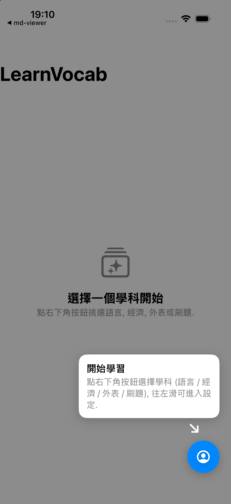

Four subjects
Language, economy, appearance, and coding. Economy cards are study material, not financial advice.
iOS 17+ · macOS 14+
Pick language, economy, appearance, or coding. Tap to hear the card on the device. New cards come from the stts server you configure.
Questions and privacy requests go to the public issue tracker. Do not include an API key.

Language, economy, appearance, and coding. Economy cards are study material, not financial advice.
Hearing a card uses the system speech synthesizer. That audio is not uploaded.
The default address is stts.shuks.dev. You can change it. The API key stays in the device Keychain.